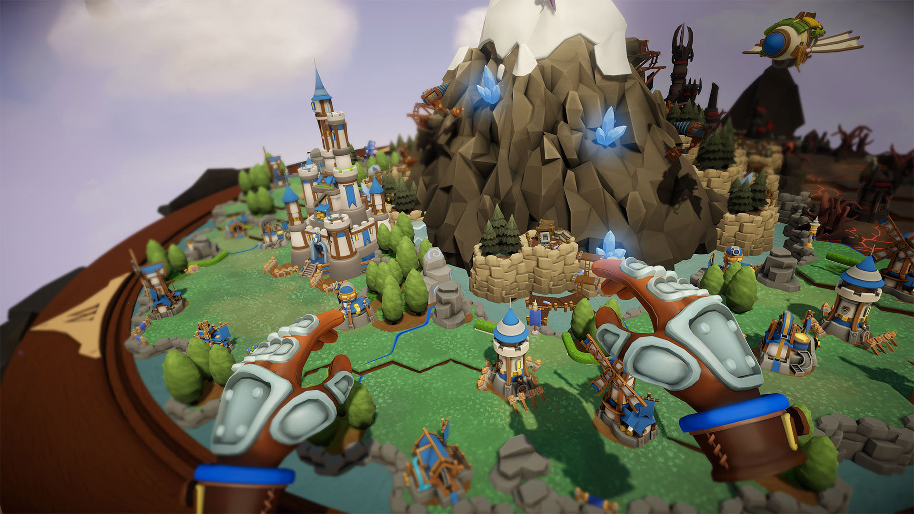
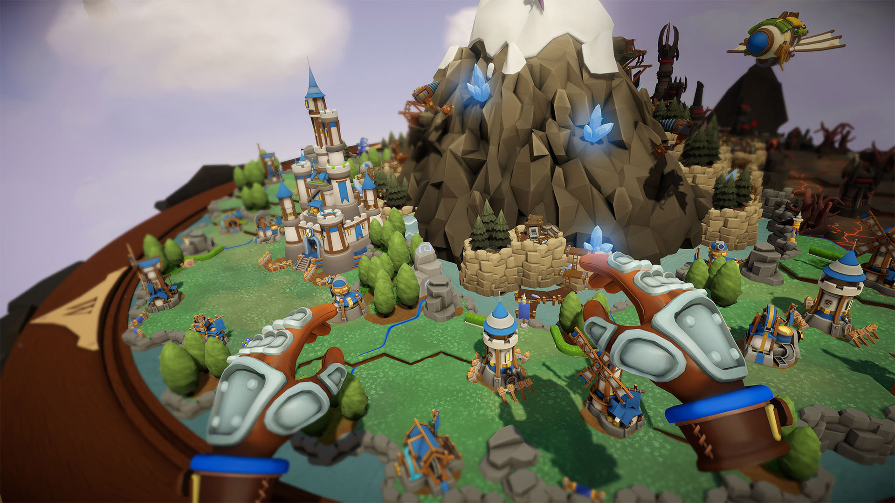
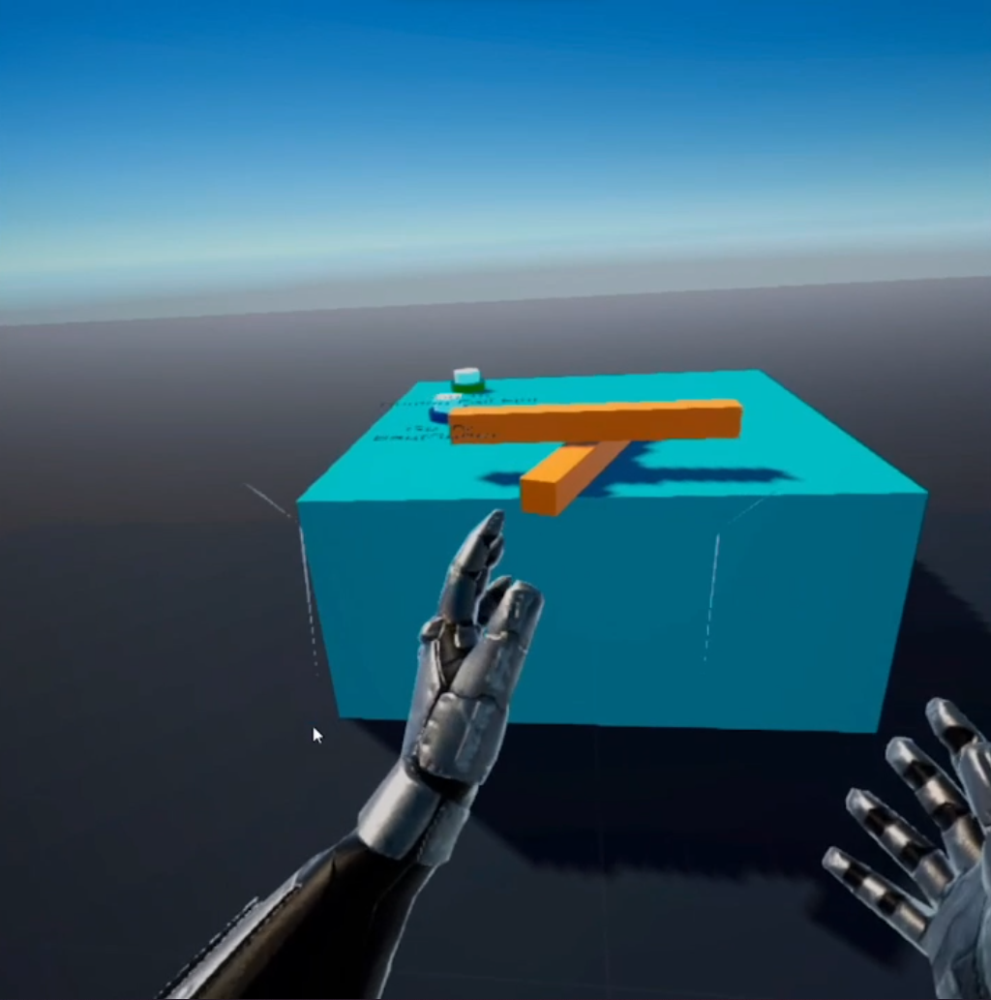
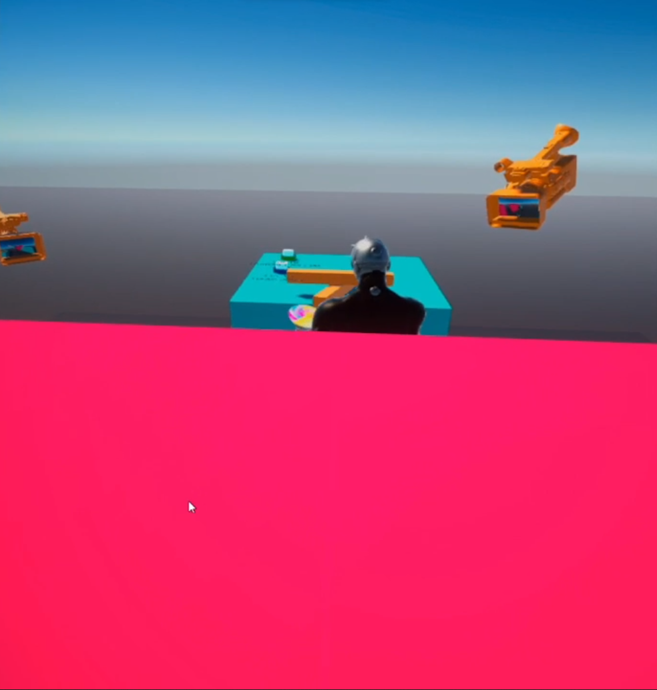
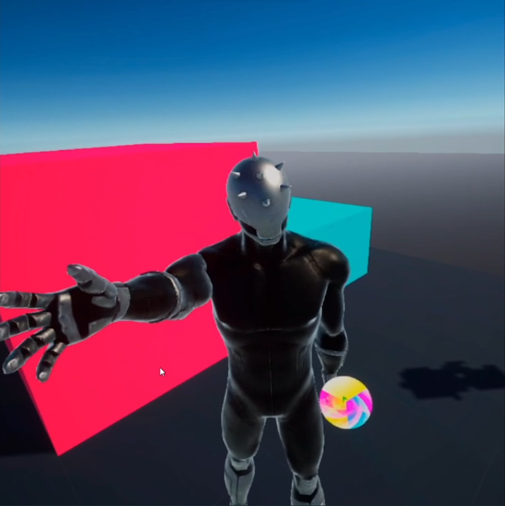
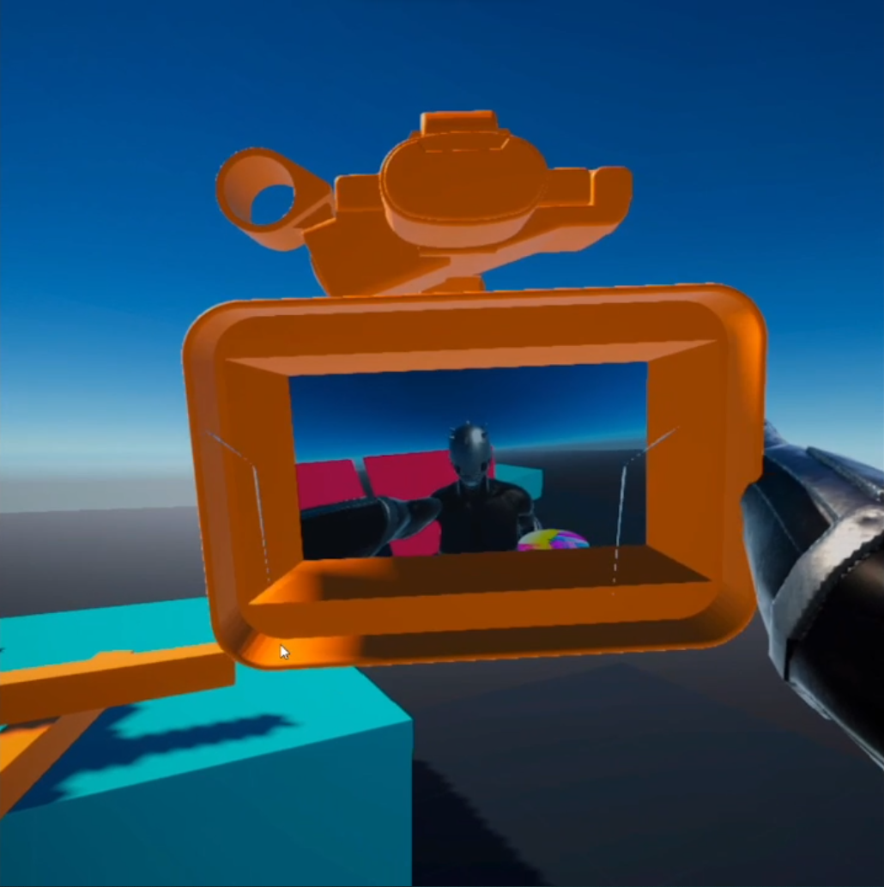
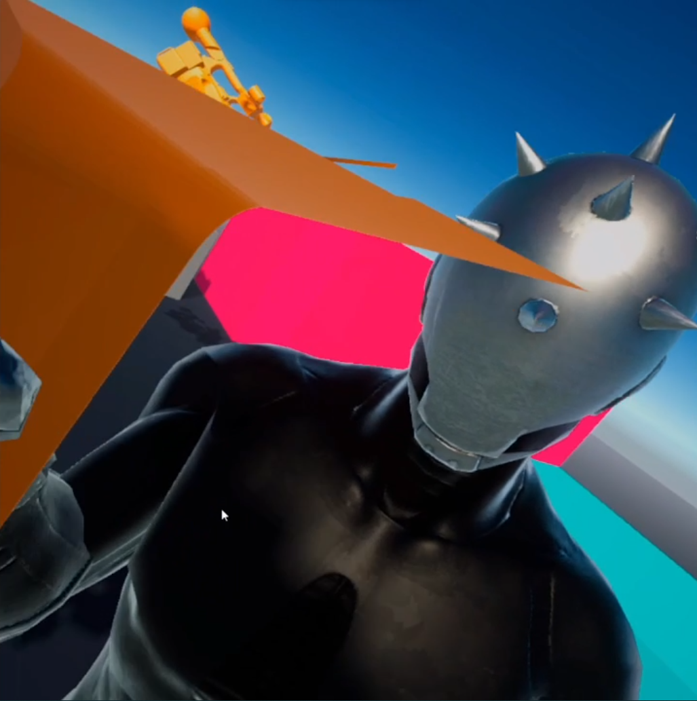
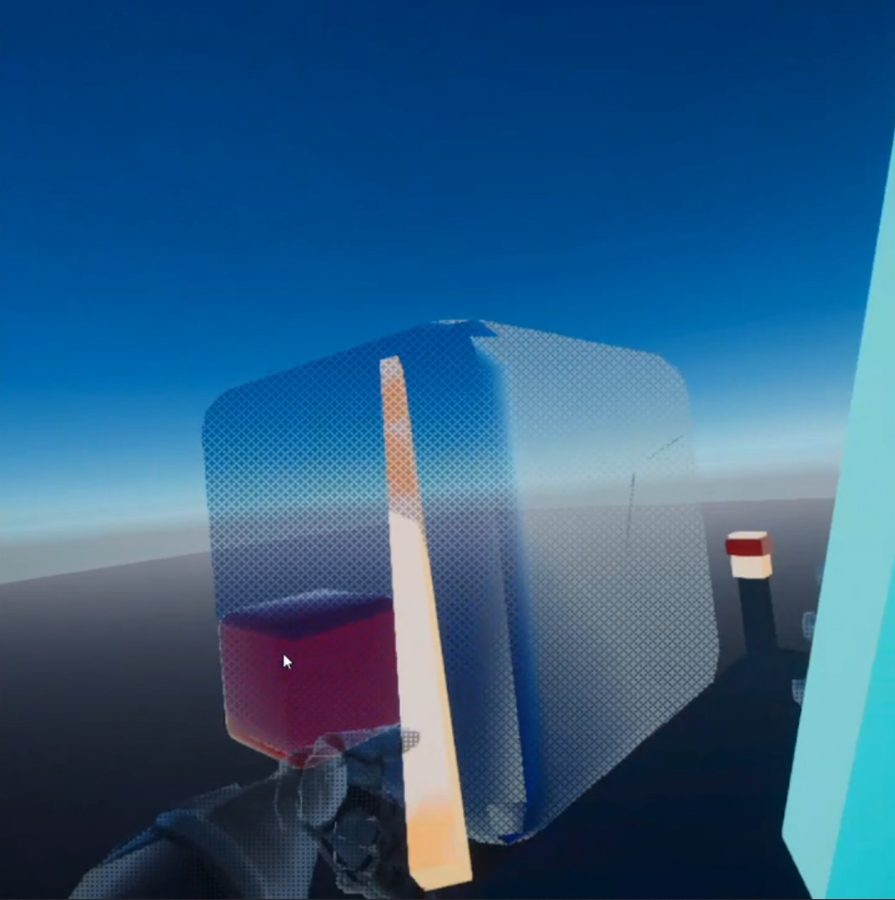
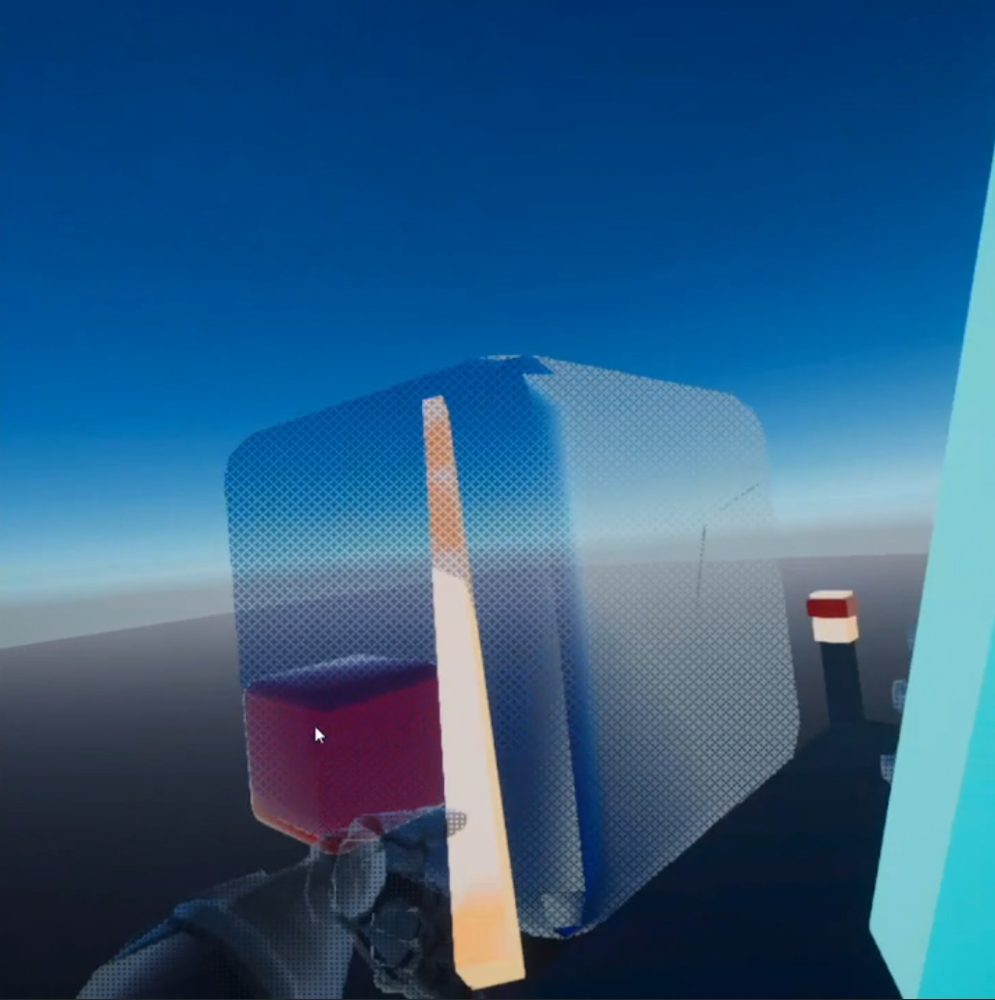

English
EnglishRésumé
Ce projet vise à explorer les possibilités offertes par l'utilisation de point de vue non conventionnels dans les applications en Réalité Virtuelle (VR), en particulier dans le domaine des jeux vidéo en VR.
Dans son état actuel, le projet est constitué d'une application VR éxecutable sur les appareils Oculus Quest 2 dans laquelle l'utilisateur peut accéder à une scène type bac à sable avec
différents points de vue à disposition, ainsi que 2 cas d'utilisations concrets.
Ce projet a été réalisé par Louis Ginesy et encadré par Jan Gugenheimer.
Motivation & État de l'Art
Le point de vue est un aspect des jeux vidéo qui a évolué et connu plein de nouvelles approches au cours du temps.
Certains définissent un genre à eux seuls, tels que les jeux en première personne pour les first person shooters, ou la caméra en vue de coté pour les plateformeurs 2D.
Cependant dans la très grande majorité des jeux VR, le seul type de caméra utilisé est la vue en première personne (1PP), comme sur l'image de gauche ci-dessous (issue de Super Hot).
Les quelques exceptions utilisent généralement une perspective similaire à celle d'un dieu géant observant son monde, comme sur l'image en bas à droite (de Skyworld),
ce qui revient en réalité à une caméra en 1PP déguisée.
 

Se pose alors la question suivante : Est-ce que les points de vue différents de la 1PP peuvent convenir aux jeux en VR ?
En vérité, quelques chercheurs se sont déjà posé cette question. Parmi toute la littérature que j'ai pu trouvé, les articles suivants on retenu mon attention :
- 3PP-R: Enabling Natural Movement in 3rd Person Virtual Reality | Inan Evin, Toni Pesola, Maximus D. Kaos, Tuukka M. Takala, Perttu Hämäläinen
- Characterizing first and third person viewpoints and their alternation for embodied interaction in virtual reality | Henrique Galvan Debarba, Sidney Bovet, Roy Salomon, Olaf Blanke, Bruno Herbelin, Ronan Boulic
- Characterizing embodied interaction in First and Third Person Perspective viewpoints | Henrique G. Debarba, Eray Molla, Bruno Herbelin, Ronan Boulic
- Keep my head on my shoulders ! why third-person is bad for navigation in VR | Daniel Medeiros, Rafael K. dos Anjos, Daniel Mendes, João Madeiras Pereira, Alberto Raposo, Joaquim Jorge
- First- and Third-Person Perspectives in Immersive Virtual Environments: Presence and Performance Analysis of Embodied Users | Geoffrey Gorisse, Olivier Christmann, Etienne Armand Amato, Simon Richir
En général ces papiers comparent les vues en première et troisième personne sur un ou deux aspects spécific, ceux-ci étant souvent liés à la performance du joueur (déplacement, précision...) ou à l'immersion (conscience de l'environnement, la sensation d'incarner l'avatar 3D).
Notre but pour ce projet est plutôt de proposer une comparaison globale de plusieurs types de caméra, incluant la celle en 3ème personne mais pas uniquement. De plus, nous souhaitons les comparer sur plusieurs points à la fois,
dont ceux étudiés dans la littérature actuelle, mais également un que je n'ai pas rencontré lors de mes recherches : le fun et l'amusement qu'amène l'utilisation d'un nouveau type de caméra.
Implémentation
Généralités
Le projet a été implémenté en utilisant le moteur de jeu Unity, et tout le code est écrit en C#.
Les bases des interactions en VR sont prises en charge par les plugins OpenXR et XR Interaction Toolkit.
L'application est compilée et testée sur Oculus Quest 2, un casque de VR autonome.
Le système d'exploitation du Quest2 est Android, ainsi le résultat de la compilation est un fichier .apk.
Le projet complet est disponible sur Github.
Projection de la Caméra
L'aspect principal de ce projet est d'avoir une caméra active qui ne soit pas en 1PP. Pour obtenir ce résultat, plusieurs possibilités s'offre à nous. Mais avant, jetons un oeil au système de caméra dans la situation standard d'une 1PP :

Dans cette scène (image de gauche), le joueur est représenté par le cylindre noir en fil de fer. Là où se situe sa tête, une caméra (représentée par la pyramide noire)
est placée pour agir comme ses yeux. À chaque frame, la caméra fait le rendu de la scène, et c'est ce que le joueur voit (image de droite).
À cause de ce rôle, nous l'appelerons la View Camera.
Pour avoir un autre point de vue, la façon de procéder la plus directe est de déplacer cette View Camera à la position désirée, et d'éventuellement changer son comportement (par example, bloquer son déplacement ou sa rotation selon un axe particulier). Cependant cette méthode peut être lourde à mettre en place et exécuter
puisque pour chaque nouveau point de vue que l'on souhaite ajouter, l'application aura potentiellement beaucoup de sous-opérations à effectuer pour chaque changement de caméra.
À la place, nous avons décidé d'utiliser l'astuce de la "Projection sur Plan".
Cette méthode fonctionne en 2 étapes : d'abord nous créons une nouvelle caméra qui correspond au point de vue que l'on souhaite ajouter, et qui aura toujours le comportement correspondant (voir l'image ci-dessous).
À chaque frame cette nouvelle caméra fera un rendu de la scène, joueur inclus, et sauvegardera ce rendu dans une texture dédiée. Cette texture de rendu est gardée en mémoire mais pas directement affichée sur l'écran du casque VR.

La seconde étape est de projeter la texture de rendu ainsi obtenue sur un plan placé devant la View Camera. Nous appelons ce plan le Plan de Projection. Notez que la View Camera suit toujours les mouvements de la tête du joueur comme dans le cas de la 1PP. Puis la View Camera fait un rendu contenant uniquement le Plan de Projection (avec la texture de rendu projetée dessus). Ce second rendu est ce qui est in fine montré au montré au joueur (image à droite ci-dessous).


L'avantage de cette seconde méthode est qu'elle rend l'ajout de nouveaux points de vue et la transition de l'un à l'autre très faciles : pour ce faire, il suffit de créer un nouvel objet caméra et de le paramétrer une seule fois. Puis pour changer de caméra, il suffit de changer quel texture de rendu ou Plan de Projection la View Camera doit voir.
Scènes
L'application elle-même est consituté de 3 scènes différentes.
Celle de départ a le rôle de zone d'apprentissage et d'expérimentation pour les nouveaux joueurs. Les deux autres scènes sont des tentatives d'applications concrètes utilisant des point de vue alternatifs.
Scène Principale : Le Bac à Sable
La première scène de l'application est la "Scène Principale".
Il s'agit simplement d'un bac à sable où le joueur peut appréhender les différents perspectives proposées dans un environment simple.
Ce dernier est composé d'un sol et de quelques cubes à taille humaine. Sur la table au centre, il y a 2 boutons qui permettent de charger une autre scène, ainsi que
deux bâtons oranges que le joueur peut attraper avec ses maines. Il peut sauter en appuyant sur le bouton A de sa manette. Le joueur peut également déplacer/tourner son avatar avec
ses joysticks ou en se déplaceant physiquement dans le monde réel. Dans le cas où l'utilisateur atteint la limite physiqe de son aire de jeu, il peut appuyer sur le bouton B pour temporairement bloquer
la rotation de son avatar. Lorsque la rotation est bloqué, l'écran affiche une couleur unie grise au lieu du rendu de la scène.
Pour explorer les différents types de caméras disponibles, le joueur peut activer la sélection de caméra avec son bouton Y. Dans ce mode, un cercle coloré accompagné d'une flèche verte apparaissent
dans sur la main gauche de son avatar. Il peut alors utiliser son joystick gauche pour changer la caméra active au lieu de déplacer son avatar.
Les points de vue disponibles sont :
- 1PP : La vue par défaut, principalement ici pour servir de témoin par rapport aux autres perspectives.
 - 3PP : Une vue en troisième personne où la caméra est toujours reliée à la tête comme en 1PP, mais avec un décalage. Appuyer sur le bouton X en dehors du mode de sélection de caméra
permet à l'utilisateur d'ajuster ce décalage avec son joystick gauche.

- TopDown : Avec cette perspective, la caméra suit l'avatar sur les déplacements et rotations induits par l'actionnement des joysticks, mais ignore ceux induits par les mouvements physiques du joueur dans le monde réel.
 - Perspective de Côté : Ici la caméra est positionnée comme si le jeu était en 2D. Le rendu de la caméra se fait toujours avec un effet de perspective. La caméra suit les déplacements latéraux et verticaux
du joueur, mais pas ses rotations ni ses mouvements selon la direction normale à la caméra.

- Orthographique de Côté : Cette caméra fonctionne comme la précédente, mais avec un rendu Orthographique/Isometrique à la place (c'est-à-dire sans effet de perspective).

- Orthographique de Côté inclinée : Une autre variante du précédent point de vue, mais ici la caméra est un peu surélevée et inclinée vers le joueur. Le rendu est également Orthographique.

- Vraie Caméra : Cette caméra est parentée à un gameobject (la grosse caméra orange sur la droite) que le joueur peut physiquement pousser ou attraper.
  - Vraie Caméra avec Rotation libre : La même perspective que la précédente, mais en plus la caméra répliquera les rotations de la tête tant que le point de vue est actif. Cela permet de
regarder aux alentours plus facilement et de rendre la caméra plus agréable à utiliser.

Cas concret n°1 : Beat Saber en 3PP
Pour le premier de nos cas d'usages concrets, nous voulions quelque chose qui puisse profiter de la 3PP.
En effet, parmi toutes les perspectives alternatives que nous avons essayé, c'est celle qui nous a semblé la plus naturelle à apprendre et plaisante à utiliser.
Nous avons estimé qu'un gameplay qui pourrait exploiter à son avantage la 3PP est celui du jeu
Beat Saber.
Beat Saber est un jeu où le joueur a deux sabres de couleurs différentes, et doit découper des cubes colorés qui viennent à lui en rythme avec la musique.
Pour marquer un maximum de points, l'utilisateur doit couper tous les cubes avec le sabre correspondant (celui de la même couleur que le cube) et dans la direction
indiquée par la flèche sur le cube. Dans le mode de jeu standard, les cubes apparaissent devant l'utilisateur. Mais des modes 90° et 360° sont disponibles dans lesquels les cubes peuvent aussi venir des côtés (voir exemple sur l'iamge ci-desssous).
Nous avons décidé de nous inspirer de ces modes en particulier. En effet dans la littérature que j'ai lu il est avancé que la 3PP fournit une meilleure conscience de l'espace que la 1PP.
Devoir trancher des cubes venant de n'importe quelle direction nous a semblé être un bon moyen de tirer profit de cette caractéristique.

L'élaboration de ce cas pratique a été réalisée en deux temps. D'abord, j'ai essayé de reproduire le gameplay original de Beat Saber avec quelques altérations. Cela inclut la découpe de blocs avec deux couleurs différentes,
la détection de la direction du tranchage, et la possibilité de faire apparaître au choix les cubes selon une direction fixe ou depuis n'importe quelle direction autour du joueur de façon aléatoire. Par la suite j'ai également ajouté l'option
de faire apparaître le cube dans une direction aléatoire mais proche du cube précédent afin d'éviter de forcer le joueur à se retourner trop fréquemment.
La partie rythmique/musicale du jeu a été mise de côté car cela nécessiterait un temps de développement additionnel conséquent pour une fonctionnalité qui n'a pas d'intérêt pour notre sujet.
En remplacement, les cubes apparaissent périodiquement à un délai fixe à une position choisie aléatoirement.
Après une courte session de test sur cette implémentation avec d'auters chercheurs, quelques modifications ont été décidédes pour d'avantage adapter le jeu à la 3PP.
Tout d'abord, l'avatar du joueur a été rendu semi-transparent afin d'assurer que ce dernier pourra toujours voir ses sabres et les cubes. Cet effet a été réalisé avec
un filtre dither car il procure une sensation de présence tout en rendant possible de voir au travers. Les autres modifications concernent les cubes. Pour que ce soit plus facile d'atteindre les cubes en 3PP
ils ont été aggrandis, et la direction de découpe n'est plus pris en compte. En réalité, maintenant un sabre doit simplement toucher un cube pour le trancher.
En plus de ces modifications, quelques ajouts ont également été faits.
J'ai ajouté la possibilité de changer la tolérance de coupe :
- Une couleur par sabre et chaque sabre est capable de découper tous les cubes
- Une couleur par sabre mais seul le bon sabre peut couper un cube donné (le toucher avec le mauvais sabre le rendra simplement transparent comme sur l'image à droite ci-dessous)
- Une couleur pour les deux sabres et tous les cubes
J'ai également ajouté la possibilité de choisir 3 vitesses différentes pour l'apparition des cubes. Finalement, j'ai ajouté la possibilité de faire apparaitre les cubes avec une inclinaison verticales fixe ou aléatoire, ce qui est un ajout comparé au jeu Beat Saber original.

 

Cas concret n°2 : Escape Game en vue Top Down Isometrique
Pour le second cas d'utilisation concret nous voulions une perspective différente de celle de la 3PP.
Comme nous n'avions pas d'idée précise nous avons fait une session de brainstorming. À l'issue de celle-ci nous avons décidé de partir sur une caméra en vue top-down sans effet de perspective combinée à un jeu
d'exploration/puzzle similaire dans son concept à Captain Toad.
Afin que l'aspect VR du jeu ait toujours un intérêt, nous avons choisi d'intégrer plusieurs interactions physiques comme la pression de boutons, de sliders, or le déplacement de boîtes attrapables
comme dans le jeu Human Fall Flat.
Enfin, nous voulions que l'utilisateur puisse uniquement déplacer son avatar par ses mouvements dans le monde réel, donc en excluant l'utilisation des joysticks.
Ainsi comme le joueur devra physiquement naviguer dans son aire de jeu, j'ai intentionellement designer le niveau pour être une tour verticale afin de limiter l'espace nécessaire.
Avec le type de caméra choisi, le joueur peut alterner entre deux points de vue qui sont diagonalement opposés en appuyant sur le bouton X de ses manettes. Cela lui permet de voir différentes choses selon l'orientation actuelle de la caméra. J'ai essayé d'en tirer parti dans le level design puisque cette fonctionnalité exclusive à une perspective non 1PP permet de nouvelles possibilités comme cacher des indices ou le chemin à prendre.


Afin de m'assurer que les étages supérieurs n'occluent le joueur et l'étage actuel, je les rend semi-transparents de façon dynamique. Le taux de transparence dépend de l'altitude du joueur.
Premières impressions d'un utilisateur naïf
Une fois l'implémentation du projet achevée, je l'ai fait testé par un de mes amis.
Il avait déjà eu l'occasion de rapidement expérimenter la VR quelques fois (moins d'une heure au total) et en particulier avait déjà joué au jeu original Beat Saber. Cependant il était complétement naïf des perspectives de caméra alternatives proposées par notre projet. De ce fait, ces premières impressions sur ces dernières sont des informations de valeur.
Même si elles ne remplacent pas une session de test complète, non biaisée et réfléchie, elles prodiguent une bonne estimation des résultats que de tels tests pourraient produire.
Le test a commencé avec le jeu inspiré de Beat Saber. Comme mon ami avait déjà joué à Beat Saber, la phase d'apprentissage était concentrée sur l'utilisation de la 3PP en remplacement de la 1PP. Après y avoir joué pendant environ 5 minutes, nous sommes passés à la scène d'Escape Game. Pour cette seconde scène j'ai dû expliquer à mon ami comment utiliser la fonctionnalité "Blocage de la rotation de l'avatar", et lui ai aussi donné quelques indications sur l'énigme elle-même.
Après que chaque jeu ait été joué, j'ai orallement questionné s'il avait été fun et si l'identification à l'avater était bonne. Globalement il s'est avéré que les jeux étaient plutôt funs, et que le sens d'incarnation était suffisament convaincant.
Cependant, mon ami a également mis le doigt sur quelques problèmes. Tout d'abord, cette implémentation a quelques problèmes avec le système de kinématique inverse (IK) des jambes de l'avatar qui donne un résultat curieux dans certaines situations, en particulier lorsque le joueur utilise ses joysticks pour se déplacer, et ces problèmes d'IK tendent à briser le sens d'immersion lorsqu'ils surviennent. Un autre problème que mon ami a rencontré est la phase d'apprentissage lors du second jeu qui était un peu hardue à surmonter. Cependant une fois passée, le jeu était agréable à jouer. Enfin, le dernier problème que j'ai remarqué vient de la perspective isométrique (celle du jeu Escape Game), où la perception de la profondeur est parfois trompée, probablement justement à cause de l'aspect Orthographique de cette caméra.
Une dernière chose que l'on peut noter est que mon ami n'a mentionné aucune sensation de malaise ou mal-être causé par la VR.
La suite
Pour finaliser ce projet, il y a plusieurs points qui peuvent ou devraient être abordés :
- - Réparer les problèmes d'IK et plus généralement soigner les finitions du projet :
- Comme l'idée était de réaliser des jeux preuves de concept pour essayer les points de vue alternatifs, les finitions ont été mises de côté. Cependant, comme les premières impressions l'ont montré, un aspect visuel disfonctionnel comme l'IK peut à lui seul briser l'immersion et biaser les résultats.
- - Ajouter un troisième cas d'utilisation concret (Optionnel) :
- Ce point n'est pas obligatoire. Cependant lors de la session de brainstorming une idée intéressante de jeu VR a été proposée. Elle consiste en un jeu de Tape-Taupe avec une caméra en 3PP, où mes taupes apparaîtraient sur les faces d'un cube au lieu du dessus d'une table. Comme l'expérience est assez similaire à celle de la scène Beat Saber que nous avions fait, nous avions choisi d'implémenter la scène d'Escape Game à la place. Mais le Whac-A-Mole serait un jeu intéressant à essayer.
- - Créer une version Test du projet :
- Dans l'état actuel du projet, l'utilisateur peut librement changer la scène actuelle, son type de caméra, et même quelques réglages de jeu dans le cas de la scène Beat Saber. Pour faire de vrais tests scientifiques, nous aurions besoin de créer une version dédiée où le joueur a moins de flexibilité et doit suivre un scnéario spécific et prédéterminé. De plus, ce serait l'occasion d'écrire des données intéressantes dans un fichier pendant que le tes est en court.
- - Mener de véritables sessions de test :
- Une fois la version de test complète, il sera temps de l'essayer avec plusieurs testeurs dans un environnement contrôlé. Après la session de jeu ces utilisateurs devraient répondre à un questionnaires prévu à cet effet, et nous pourrons par la suite analyser ces réponses et les données receuillies lors des tests to obtenir les résultats définitifs et exploitables.
Conclusion
Les résultats sont plutôt positifs : ils tendent à montrer qu'avec un game design adapté qui tire profit à la fois des types de caméra alternatifs et de la dimension VR
de l'application, l'utilisation de ces nouvelles perspectives peut être un véritable plus et un renouveau pour l'industrie du jeu VR.
Il faut cependant garder à l'esprit que je n'ai pas préparé la formulation des mes questions à l'avance et donc qu'elles sont probablement plus ou moins biaisées.
Pour avoir de plus amples et fiables résultats, il est nécessaire d'exécuter de véritables sessions de test, comme détaillé dans la section précédente.
Dépôt du projet sur Github
Vidéo de Démonstration :